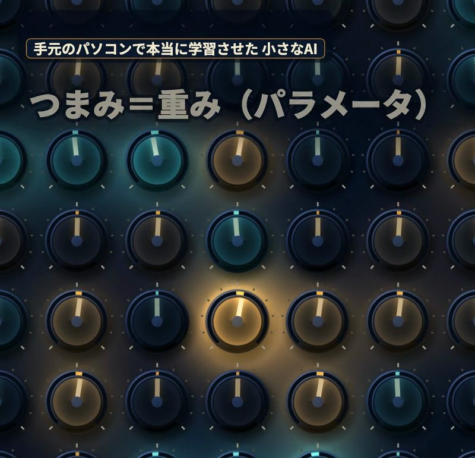
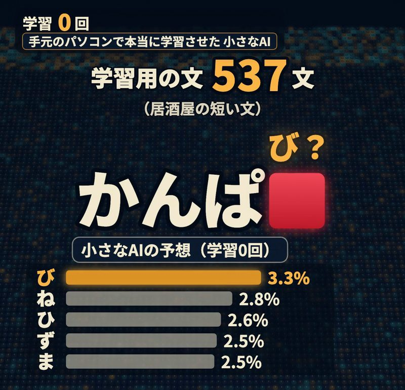
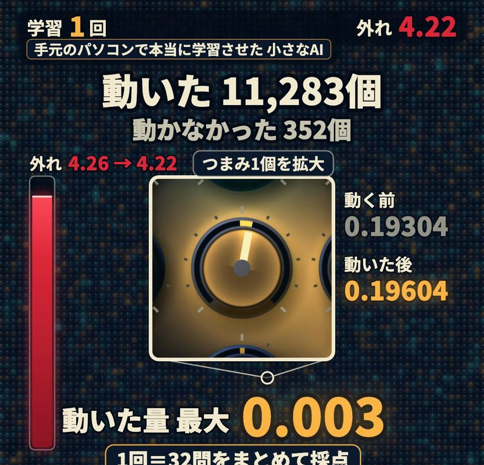
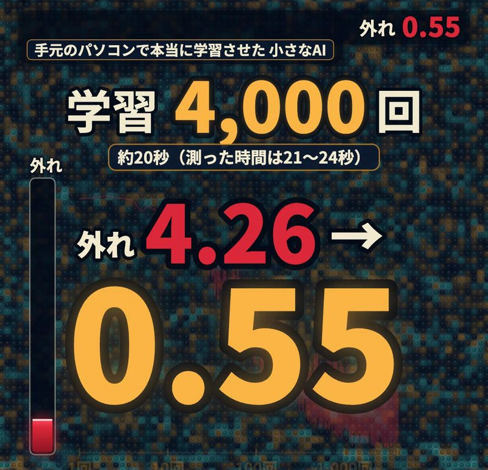
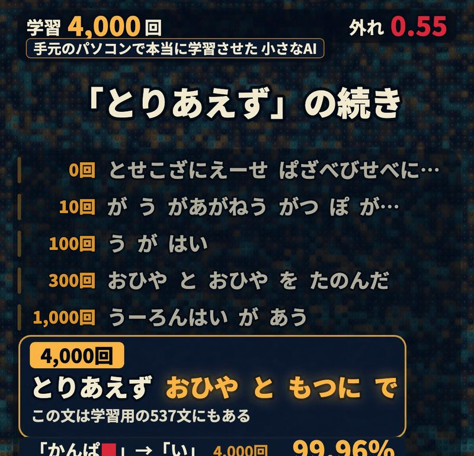
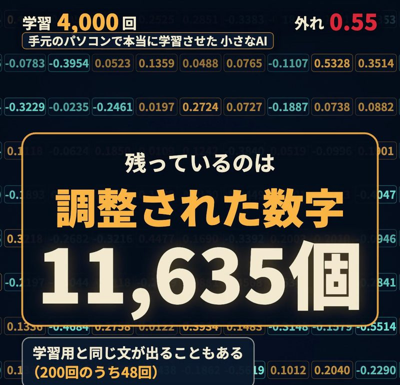
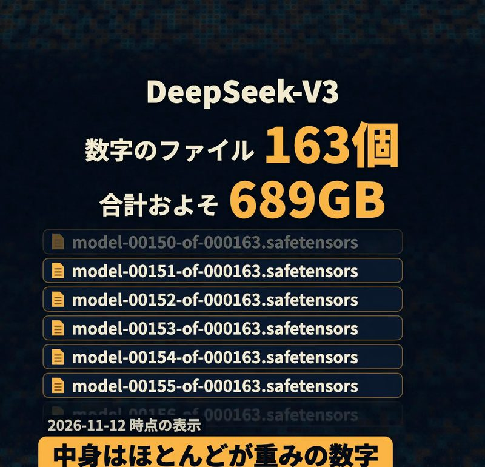

AIの学習は、本を読んで覚えることではありません。AIの中に並んだ大量のつまみ（重み）を、少しずつ回す作業です。つまみが1万1635個ある小さなAIを手元のパソコンで学習させ、本物の数字で学習の中身を追いました。
AIの中には、音量つまみのような数字が並んでいる
AIの中には、重みと呼ばれる、音量つまみのような数字が大量に並んでいます。重みは、パラメータとも呼ばれます（厳密には、パラメータは重みとバイアスを合わせたものです）。
重みが何を表すのかは、ニューラルネットワークとはで説明しています。
つまみが1万1635個ある小さなAIを、手元のパソコンで学習させました。小さなAIは、前の6文字を見て、次の1文字を当てる、自作のニューラルネットワークです。

学習前の小さなAIは、でたらめな文字を書いた
学習前の小さなAIは、「とりあえず」の続きに、「とせこざにえーせ」とでたらめな文字を書きました。
続きの1文字を隠して、当てさせる
学習のプログラムは、居酒屋の短い文537文から、続きの1文字を隠して、小さなAIに当てさせます。537文は、自分で作った表を組み合わせて作った文で、既存の作品は写していません。
学習前の小さなAIは、「かんぱ」の次の文字を「び」と予想しました。「び」の確率は3.3%で、正解の「い」は、上位5つの候補に入っていませんでした。

外れが小さくなる方向に、つまみを少しずつ動かす
学習のプログラムは、予想の外れの大きさを計算して、外れが小さくなる方向に、つまみをまとめて少しずつ動かします。1回の学習では、32問をまとめて採点します。
1回目の学習でつまみが動いた量は、最大でも0.003でした。1万1635個のつまみのうち、1万1283個が動き、352個は動きませんでした。

4000回繰り返すと、外れは4.26から0.55に下がった
学習のプログラムは、当てさせて直す作業を、20秒ほどで4000回繰り返しました。実際に測った時間は、21〜24秒でした。外れの値は、4.26から0.55まで下がりました。

小さなAIの作文は、回数ごとに読める文になった
小さなAIは、「とりあえず」の続きに、次のように書きました。
- 100回のあと：「う が はい」
- 300回のあと：「おひや と おひや を たのんだ」
- 4000回のあと：「おひや と もつに で」

4000回のあとの「とりあえず おひや と もつに で」は、学習用の537文にもある文です。一方で、小さなAIは、学習用の537文にない「かんぱい の まえ に さしみ を たのもう」という文も書きました。
人は、文法のルールを1つも書き込んでいない
人は、小さなAIに、文法のルールを1つも書き込んでいません。人が入れたのは、文章と、当てさせて直す手順だけです。
学習後のAIの中に残っているのは、調整された数字
学習が終わった小さなAIの中に、元の文章が本棚のように並んでいるわけではありません。小さなAIの中に残っているのは、調整された数字です。
ただし、小さなAIは、学習用と同じ文を書くこともあります。書き出しを決めずに200回書かせたところ、48回は学習用と同じ文でした。

大きなAIも、続きを当てさせてつまみを動かす
文章を作る大きなAIの学習も、続きを当てさせて、つまみを少しずつ動かす作業です。大きなモデルには、つまみが1000億個を超えるものもあります。
- GPT-3：1750億個
- Llama 3.1 405B：4050億個
- DeepSeek-V3：約6710億個
人がダウンロードするモデルのファイルの中身も、ほとんどが重みの数字です。たとえば DeepSeek-V3 は、数字のファイルが163個、合計でおよそ689GBあります（2026年11月12日時点の表示）。

AIの学習とは、大量のつまみを少しずつ調整する、地道な作業です。学習を終えたAIが文章をどう作るのかは、AIはどうやって文章や画像を作る？で説明しています。
出典と実演の条件
- 重み（パラメータ）：Google Machine Learning Glossary（2026-11-12 確認）
- 続きを当てさせ、外れが小さくなる方向に少しずつ動かす：Google Machine Learning Crash Course（LLM）、同（勾配降下法）（2026-11-12 確認）
- パラメータの数：GPT-3、Llama 3.1 405B、DeepSeek-V3（2026-11-12 確認）
- DeepSeek-V3 のファイル：ファイル一覧、safetensors の説明（2026-11-12 確認）
- 学習したAIが学習用の文章をそのまま出すことがある研究：Carlini ほか（2020）、Nasr ほか（2023）
- 小さなAI：2026年11月12日に手元の Mac で学習させた自作のニューラルネットワーク。つまみ 11,635個、学習用の文 537文、1回32問、4,000回。記事の数字はすべて学習の記録の値
この記事は、短尺動画シリーズ「酒のつまみになるAI」の回を、読み物として書き直したものです。